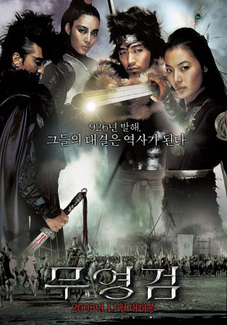

#10529 Shadowless Sword
 
 IMDB-Wertung: 6.5 / 10
IMDB-Wertung: 6.5 / 10  Metascore: 0
Metascore: 0 
Die effektivste und eleganteste Fortbewegungsart ist und bleibt der Flug. Eine Schwertkampfmeisterin landet nur im Notfall auf der Erde, zum Beispiel, wenn es gilt, ungekrönte Könige vor barbarischen Horden zu retten. Dann sind Aufschlitzen, Knochenbrechen und mit Blutfontänen bestäubte Körperexplosionen an der Tagesordnung.
Jahr: 2005
Dauer: 116 Minuten
FSK: 16
Land: Süd-Korea Studio: Splendid FilmTonspuren:
Untertitel: Deutsch,
Auflösung: 1080p (1920x816) Größe: 11161 MB
Genre: Action, Abenteuer, Geschichte
Regisseur: Young-jun Kim
Drehbuch: Shin Jun Hee, Kim Tae Kwan
Soundtrack: Jun-seong Kim
Darsteller:
- Hyeon-jun Shin als Gun Hwa-pyung
- So-yi Yoon als Yeon So-ha
- Ji-Woo Choi als Bido Moon-joo
- Ho-bin Jeong als
- Sung-woong Park als Mabul
- Seo-jin Lee als Dae Jung-hyun
- Ki-yong Lee als Mae Yung-ok
- Jin Bon-jin als Lim
- Jung Bong-jin als Yul
- Won-hee Cho als Jo
- Lee Jang-hyun als Scamp
- Jun-ha Jeong als
- Baek Ji-yeol als Jeonghyun Follower 2
- Han Kang-ho als Young Jeonghyun
- Seo-hyeon Kim als
- Su-ro Kim als
- Kim Kyung-yong als Blacksmith
- Han-sol Lee als Dan
- San-hong Lee als Black Bloodsi
- Ji-Hyun Nam als Young Soha
- Kwon Oh-tae als Balhae Soldier
- Yim Se-jin als Flying Dagger 1
- Kim Seo-hyun als Liege1
- Hyun-Joon Shin als Kun
- Paek Shin als Pub Employer
- Lee Soo-yong als Thief 2
- Park Soo-yong als Hadong Friend
- Cho Youn-ho als Liege 2
- Kang Young-goo als Jeonghyun Follower 1
- Choi Young-kyun als Thief 1
Datei: X:\HD-Eastern-Classic(N-Z)\Shadowless Sword (2005, FSK16, 1920x816).mkv seit 18.01.2019
Festplatte: HD Eastern+Western
 Es gibt insgesamt 61 Filme in der Gruppe 'HD-Eastern-Classic(N-Z)'
Es gibt insgesamt 61 Filme in der Gruppe 'HD-Eastern-Classic(N-Z)'